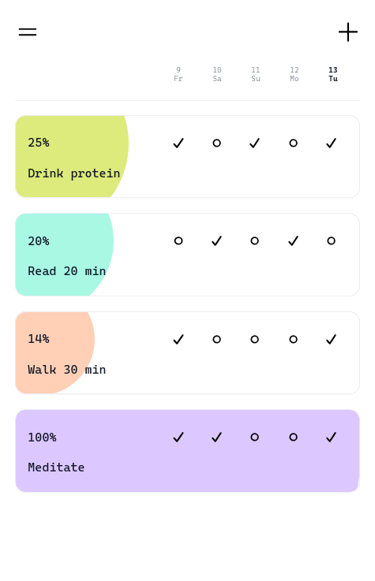

Todo Vue
SPA для управления задачами. Самостоятельный frontend-проект на Vue 3.
Vue 3, Pinia, Vue Router, Vite
GitHubМосква · удалённо / гибрид · без переезда

Fullstack-приложение для отслеживания привычек. Пользователь создаёт привычки, задаёт цели и отмечает выполнение; прогресс по каждой привычке виден прямо в общем списке.
Hibi — самостоятельный fullstack-проект: Vue 3 frontend, REST API на Hono, PostgreSQL без ORM, авторизация через JWT в HttpOnly cookie и production-деплой на VPS с NixOS.
SPA для управления задачами. Самостоятельный frontend-проект на Vue 3.
Vue 3, Pinia, Vue Router, Vite
GitHubB2B-платформа с ролями vendor и retailer. Работала над функциональностью vendor в команде из трёх разработчиков.
Командная разработка · Git · feature branches · pull requests · code review
GitHubSPA для чтения и автоматического обновления RSS-лент.
JavaScript, Axios, i18next, Yup, Bootstrap, Vite.
Учебный проект Hexlet.
GitHubCLI-приложение для сравнения JSON и YAML файлов.
Node.js.
Учебный проект Hexlet.
GitHubРусский перевод книги Silvanus P. Thompson "Calculus Made Easy" в Markdown с математическими формулами.
GitHub